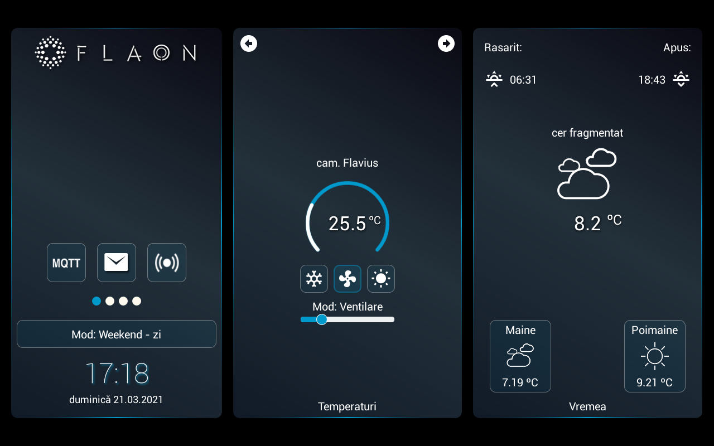
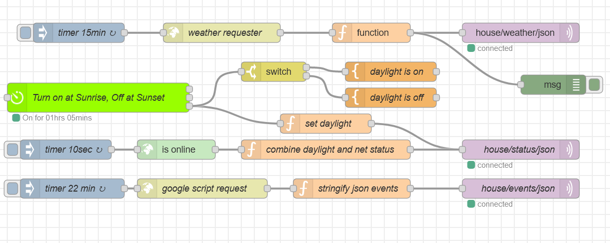

flaON12 - The spring 2021 version
Today is the spring equinox, the first day of spring, astronomically speaking.
Since my last post here a few changes has happened to my flaON project.
The first one - I dropped the nymea core and headed to Node Red. Why? Because I had some nymea:core crashes, chashes that don't belong to a smart home's core. Nymea:core is interesting, but it still has a few things to be polished.
So, I switched to Node Red
This enviroment looks good as a management/control system of a smart home, but it has NO connection with the outside, as a remote control of my home. For now, I will continue to use it like this, but I intend to use another Raspberry PI, with the Mozilla Gateway installed in, which offers the possibility of remote connection.
The second change - I also changed the layout of the application running on tablets, now a version that uses sliding frames is being implemented.

Every screen has a fixed left part, that is common, containing the notification system, a basic sliding dots and the system's mode.
Each sliding frame, in total number of 4, is divided in two, covering the following sections: temperatures, weather, system, security, devices, multimedia and settings (last frame is divided in two, but both semiframes cover the settings section).
The Node red flow for looks like bellow:

Compared to nymea:core, the Node Red is very stable, responsive and needs less resources.